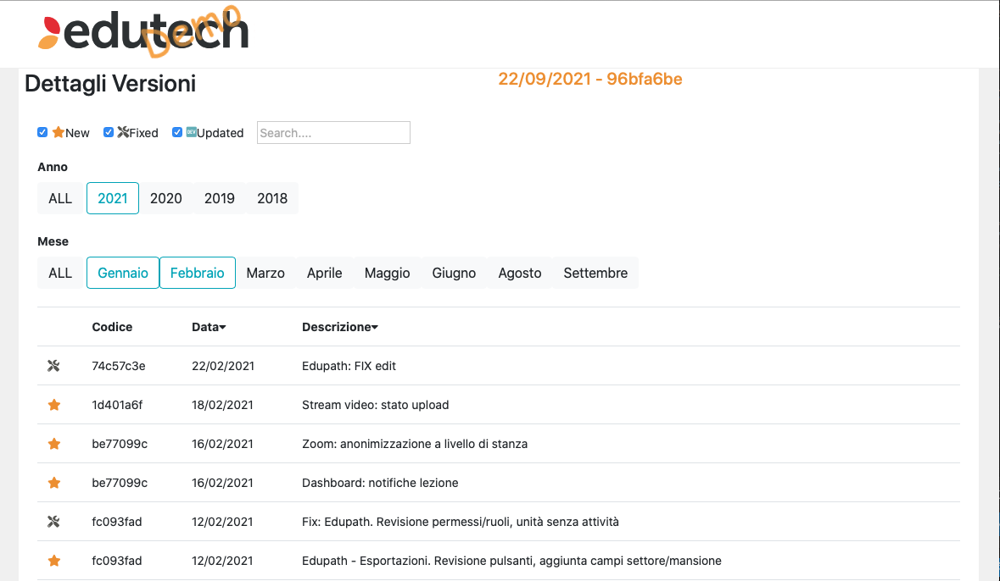

With the help of Bootstrap and CSS, worked on the graphics of the following website.
HabitechRedesigned and wrote a program for the old task page of the company. Created filters (date, search, choice etc..) all connected together to show the dsired results of the tasks. Used mainly bootstrap and Angular.
OLD VERSIONThe code has yet to be substituted with this new version.
With the help of Bootstrap and CSS, worked on the graphics of the following responsive website.
NOTE: The page is planned to be used with smartphnes and ipads.
Screenshots are provided as a link can not be shared.
Made a program, with the main use of Angular and bootstrap for the graphical part, to convert videos to other formats and have a webpage up to date with all the informations of the conversion. On the top we can see the video that's currently being converted, in the first table the converted videos with all the data converning them, in the second table we can see the waiting line of files that need to be converted. All the information is automatically updated in real time.
Administration page to add and edit courses for the Edutech online teaching company.
The following program was made using CSS, Bootstap, JS and Angular. Created and a connected a series of filters, add buttons, edit buttons and made it responsive to all platforms.
created with
Website Builder .